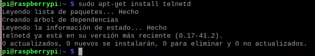
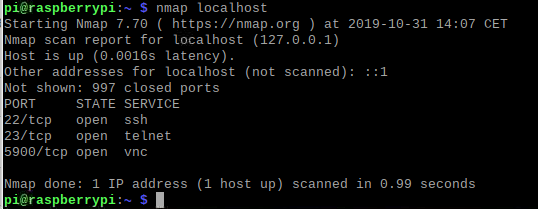
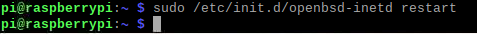
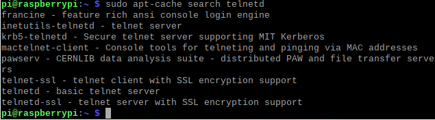
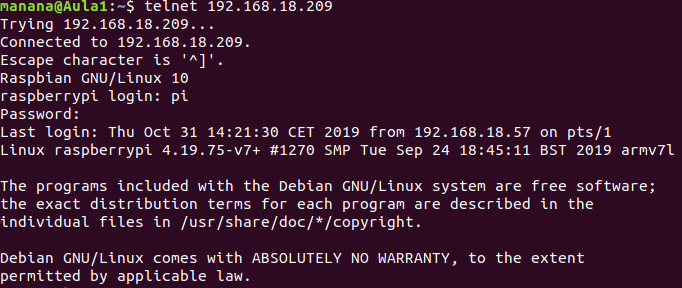
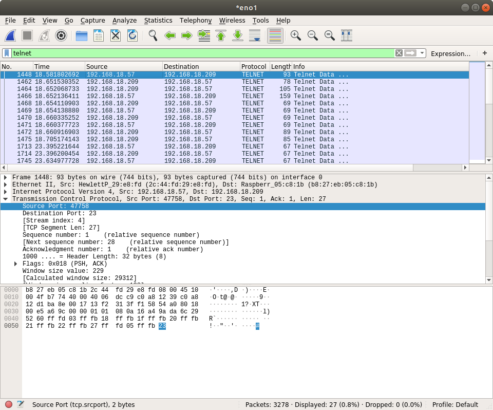
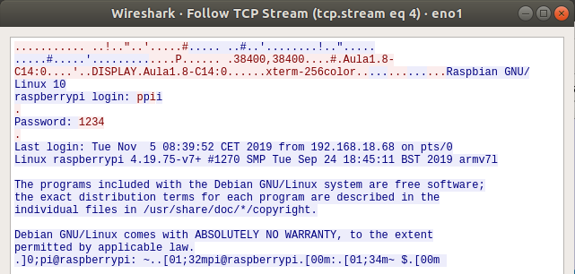
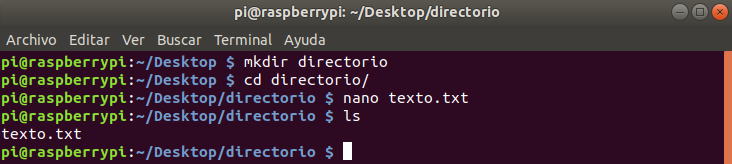
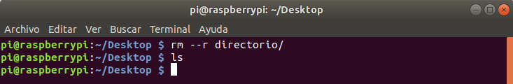

Ejercicio 1: Telnet
1. Busca información en Internet de como montar un servidor telnet, bien en
Windows o bien en GNU/Linux
Se usa el comando sudo apt-get install telnetd para instalar el servidor telnet

Después se usa el comando nmap localhost para escanear los puertos que están
abiertos

Se usa el comando sudo /etc/init.d/openbsd-inetd restart para restaurar el
servidor

Se usa el comando sudo apt-cache search telnetd para buscar donde está
ubicado el servidor

2. Una vez instalado lanza el sniffer wireshark y atrapa una conexión
telnet. Indica que puertos utiliza tanto el servidor como el cliente, así como
los protocolos usados en las distintas capas. Ponemos a analizar wireshark y
mientras nos conectamos por telnet desde otra máquina


Puertos del cliente: 47758
Puertos del servidor: 23
Protocolos: Ethernet II, TCP, IPV4
3. Indica los datos mas relevantes de cada capa
Capa física de red: 93 bytes capturados
Capa de acceso a la red: Ethernet II
Internet: IPV4
Capa de transporte: TCP
4. Calcula el tamaño de cada capa, separando el payload de la cabecera
Capa física de red: 93 bytes
Internet: 20 bytes
Capa de transporte: 32 bytes
5. Comprueba que login y contraseña viajan en texto plano

6. Crea en el equipo remoto un directorio, un archivo de texto y
posteriormente borrarlos

